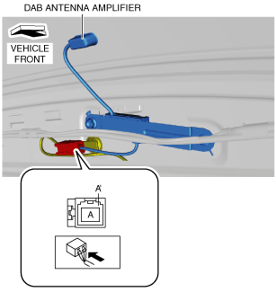

DAB ANTENNA AMPLIFIER INSPECTION
id092000815900
1. Remove the liftgate upper trim. (See LIFTGATE UPPER TRIM REMOVAL/INSTALLATION.)
2. Measure the voltage at DAB antenna amplifier connector terminal A.
